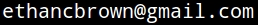

|
|
|
|
|

The best way to report a bug is at the bug tracker.
Here's online documentation for all functions, the same as what's in
the help files included with playitbyr version 0.1-1:
| %+% | print, summary and addition methods for 'sonify' objects |
| +.sonify | print, summary and addition methods for 'sonify' objects |
| .LastRendering | Play and save the last audio rendering of a 'sonify' object |
| checkSonify | Check if a 'sonify' object can be rendered |
| getPlayer | Get and set the audio player |
| linear.scale | Create a linear parameter scaling with given minimum and maximum |
| octToFreq | Convert from csound-style oct notation for pitches to frequency in Hertz |
| playAudioRendering | Render 'sonify' objects to 'audioSample' |
| playLastRendering | Play and save the last audio rendering of a 'sonify' object |
| print.sonify | print, summary and addition methods for 'sonify' objects |
| render | Render 'sonify' objects to 'audioSample' |
| saveLastRendering | Play and save the last audio rendering of a 'sonify' object |
| scaleShortcuts | Shortcut functions to set linear scales for 'sonify' objects |
| scale_dur_linear | Shortcut functions to set linear scales for 'sonify' objects |
| scale_pan_linear | Shortcut functions to set linear scales for 'sonify' objects |
| scale_pitch_linear | Shortcut functions to set linear scales for 'sonify' objects |
| scale_tempo_linear | Shortcut functions to set linear scales for 'sonify' objects |
| scale_time_linear | Shortcut functions to set linear scales for 'sonify' objects |
| scale_vol_linear | Shortcut functions to set linear scales for 'sonify' objects |
| setPlayer | Get and set the audio player |
| sonaes | Create mappings and parameters for sonification objects |
| sonify | Create sonification objects |
| sonscaling | Setting scales for 'sonify' objects |
| summary.sonify | print, summary and addition methods for 'sonify' objects |